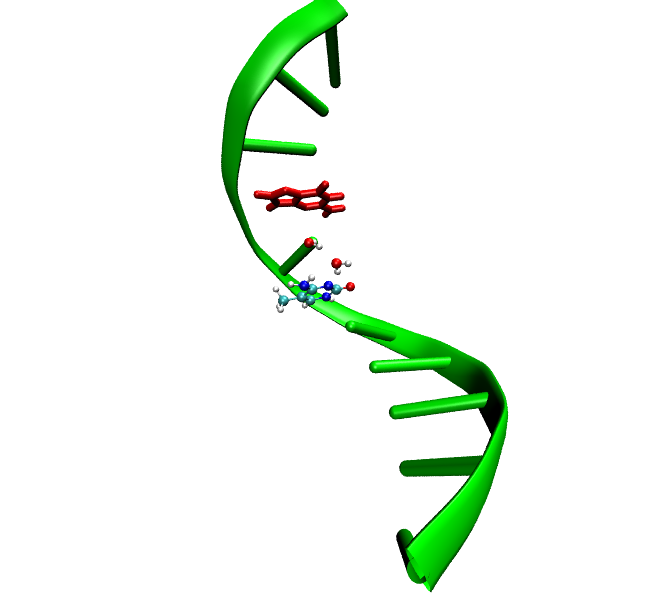

Analyze A-DNA and B-DNA
Compare the same sequence variants in two DNA geometries to test the influence of spatial arrangement.
Project 01 · Master's thesis
Computational chemistry project investigating how the local DNA sequence affects the hydrolytic deamination of cytosine and 5-methylcytosine using MED and DTSS calculations.
The project connects molecular modeling, quantum-chemical interaction analysis and Python-based data visualization to identify local sequence motifs that may favor deamination.

Research question
Instead of describing the whole reaction mechanism, this project focuses on one practical question: whether the local nucleotide environment can preferentially stabilize the transition state relative to the substrate.
Compare the same sequence variants in two DNA geometries to test the influence of spatial arrangement.
Evaluate cytosine and 5-methylcytosine deamination models using the same computational strategy.
Find neighboring nucleotides that stabilize the transition state and may lower the activation barrier.
Methodology
Selected substrate and transition-state models from Labet et al.
Generated A-DNA and B-DNA structures and prepared local single-nucleotide variants.
Calculated CAMM electrostatic contributions for interactions with neighboring bases.
Combined MED components and calculated DTSS values as MED(TS) − MED(S).
Created heatmaps, bar plots and interaction profiles to compare sequence effects.
Technologies
The project combines computational chemistry software with Python-based data analysis and reproducible file organization.
Automated data processing, MED and DTSS calculations, result organization and figure preparation.
Used for numerical operations and handling interaction energy values.
Used to organize MED, CAMM, Das and DTSS values into structured tables.
Used to generate heatmaps, energy profiles, bar plots and final result visualizations.
Used for visual inspection of DNA models and molecular structures during model preparation.
Used to prepare molecular figures and visually analyze selected substrate and transition-state structures.
Used for quantum-chemical calculations required to obtain CAMM electrostatic data.
Used as the multipole electrostatic component in MED interaction energy calculations.
Used to generate initial A-DNA and B-DNA structural models.
Used for file management, running calculations and organizing computational outputs.